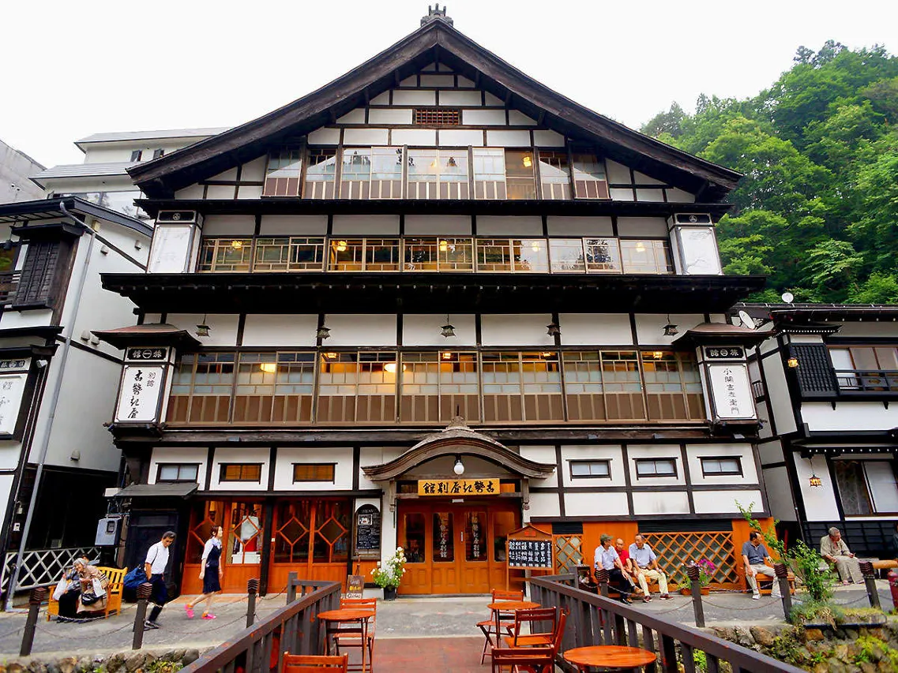
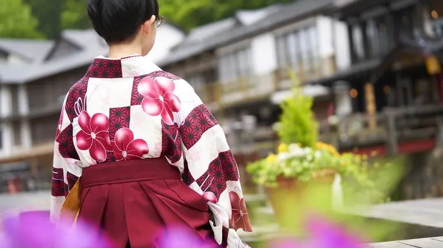
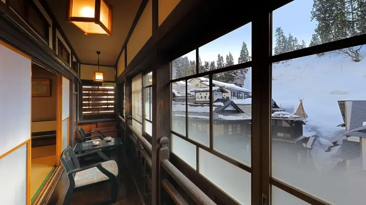
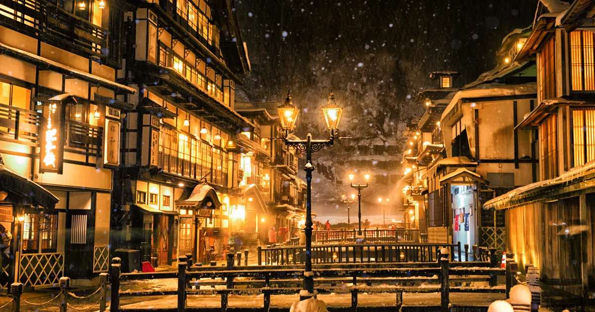
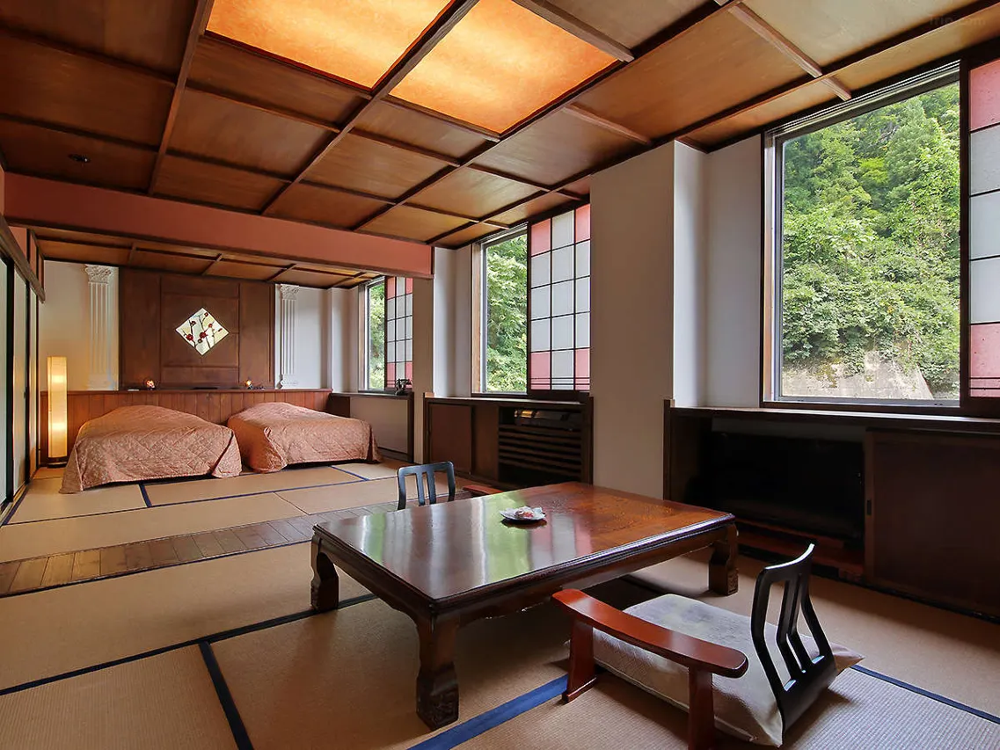
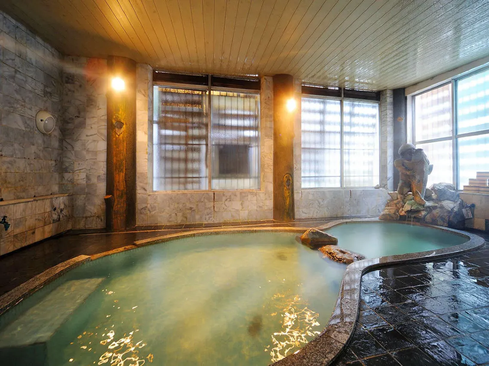
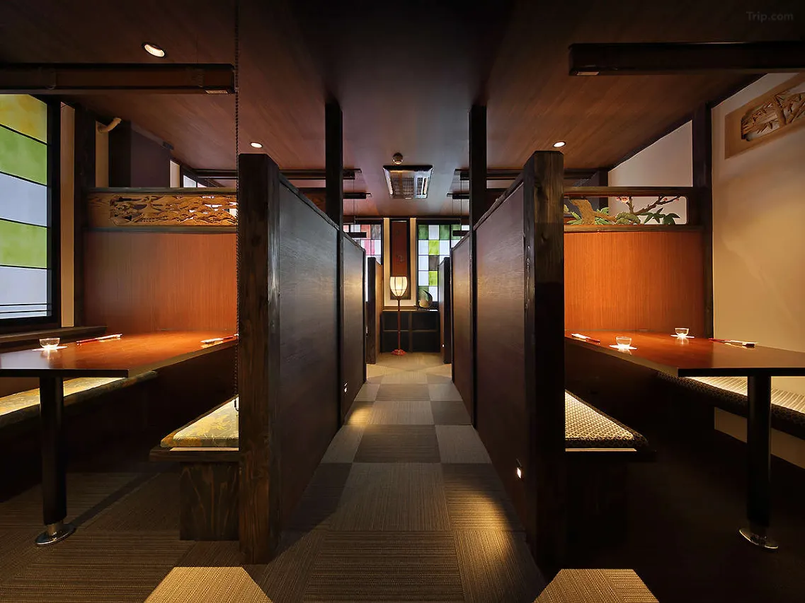
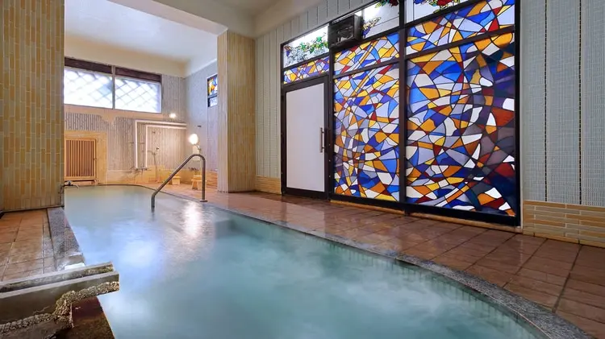
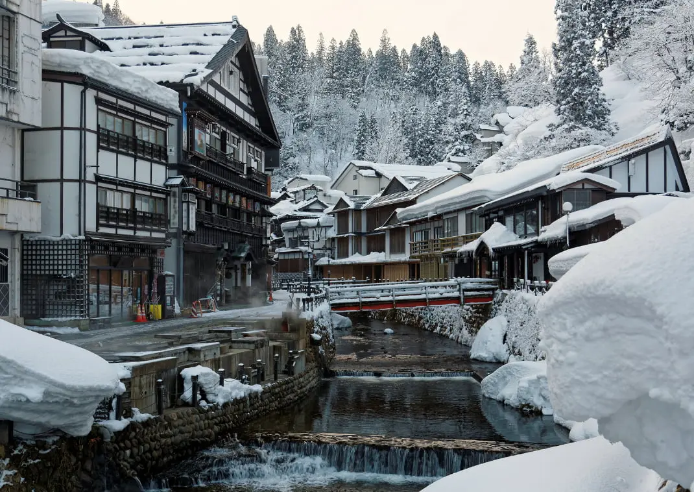

There is a specific moment that every Ginzan Onsen visitor describes the same way: you step off the shuttle bus at dusk, the gas lamps along the river gorge flicker on one by one, and the four-story Taisho-era timber ryokans begin to glow from within against the darkening mountain sky. If there is snow — and in winter there almost always is — it accumulates on the grey rooftops in perfect silence. The steam rising from the river mixes with the cold air. Someone ahead of you in a Taisho kimono is crossing the wooden bridge. And you understand, without needing the anime open in front of you, that this is the Swordsmith Village. Not inspired by it. Not similar to it. This is it.
Kosekiya Annex sits at the precise center of this scene — not at its edge, not a short walk from it, but in the middle of the town's main riverside strip, the building that has anchored this streetscape since 1914. It is the oldest continuously operating ryokan in Ginzan Onsen's modern era, now run by the 14th generation of the Koseki family, and it carries the specific weight of a building that has been inhabited continuously for over a century without ever being rebuilt from scratch.
The Building: What 500 Years of Hospitality Looks Like

The Kosekiya name traces back approximately 500 years, to the Tenpo era (1831–1845) at its most conservatively documented, though the family's connection to this specific stretch of the Ginzan River is significantly older. The current building dates from 1914 — the year the Taisho era began, and the year the Class 8620 steam locomotive (the real Mugen Train) entered mass production — making it a registered tangible cultural property of Ginzan Onsen and one of the most photographed structures in Yamagata Prefecture.
The architecture is what the Jalan booking platform calls "Taisho Roman" style: the hybrid aesthetic of early 20th-century Japan, where Western structural elements — wide bay windows, symmetrical facades, decorative woodwork — were absorbed into traditional multi-story wooden construction. The result is a building that reads as simultaneously Japanese and cosmopolitan, ancient and modern, exactly as the Taisho era itself was. Standing in front of Kosekiya Annex at night, with the gas lamps burning orange against the snow and the Ginzan River audible below, it is not difficult to understand why Koyoharu Gotouge chose this town as her template — nor why Miyazaki found what he needed here.
The Annex is distinct from Kosekiya's main building (Ginzanso) — it is the older, smaller, more atmospheric structure, positioned directly on the riverside strip rather than set back from it. Rooms on the river side have direct views of the gas lamp promenade and the opposing ryokan facades. This is the building that appears in the most-reproduced photographs of Ginzan Onsen.
The Taisho Costume Experience: Wearing the Anime

Inside Kosekiya Annex's ground floor, Cafe I'rasgayna (pronounced "I'll ask you") operates a Taisho-era costume rental service that is among the most well-considered in Japan. The women's option is a hakama-over-kimono combination — the "haikara-san" style that defined fashionable young women during the Taisho period, and the closest civilian approximation of the kind of layered traditional garments that Demon Slayer's female characters wear. For men, the options include kimono-styled shirts and peaked student caps, the masculine Taisho look that places you somewhere between a village craftsman and a Hashira candidate.
The staff dress guests themselves — this is not a self-service rental — and the care they take is notable. Even guests who have never worn a kimono leave looking like they belong in a Taisho photograph. The rental runs from a 60-minute strolling option up to an overnight package (available from 4 PM to 11 AM the following morning), meaning you can walk the gas lamp streets after dark in period dress and return your costume at checkout. This overnight option, combined with the winter snow and gas lamps, produces photographs that are difficult to distinguish from period images and impossible to reproduce anywhere else in Japan.
The Hot Springs: Two Baths, Plus Access to Ginzanso
Kosekiya Annex draws directly from the Ginzan Onsen source — a chloride and sulfate spring whose water is believed to ease neuralgia, rheumatism, and general fatigue. Two indoor baths serve the Annex: the Chika Bath of Warmth and the Kintaro Bath of Coziness, which alternate between men and women at different times of day, allowing guests who stay one night to experience both. The baths are fed directly from the source, not recirculated — the water running over the stone bath edge is fresh spring water, continuously replaced.
The more significant bathing option is available through the ryokan's sister relationship with Ginzanso: all Kosekiya Annex guests have free access to Ginzanso's considerably larger bathing facilities, including open-air baths overlooking the valley. The water temperature at Ginzanso runs cooler (approximately 39°C versus Kosekiya's hotter source), making it easier for longer soaks, and the outdoor bath's view of the snow-covered valley in winter is the kind of onsen experience that travelers specifically travel to Tohoku to find. The walk between the two buildings takes approximately five minutes along the riverside promenade — ideally undertaken in yukata after dark, with the gas lamps burning.
Rooms and Dining

Guest rooms span both river-facing and mountain-facing orientations, with the river-side rooms commanding higher rates and delivering the more iconic view — the gas lamp promenade and opposing ryokan facades visible from the window. The 2016 renovation added a fifth-floor "Romantic Rooms" category: modernized spaces that retain tatami flooring while updating the fittings to contemporary comfort standards. Standard rooms consist of two adjoining spaces in traditional configuration. Some rooms include beds rather than futon; this should be specified at booking if you have a preference.
Dinner is kaiseki — the multi-course seasonal format that is the standard for upper-tier Japanese ryokan — prepared with Yamagata Prefecture ingredients: locally grown rice, mountain vegetables, river fish, and sake from the region's prolific brewing tradition. Breakfast follows the traditional Japanese format. The ground-floor Cafe Swallones serves local sake and cocktails in the evenings, operating as a social space for guests who want to extend the night after dinner.
Getting There: The Shuttle, the Train, and the Right Time to Arrive
From Tokyo Station, the route is the Tohoku Shinkansen to Oishida Station (approximately 2 hours 40 minutes, around ¥10,000), followed by either the Kosekiya shuttle bus (35 minutes, advance reservation required) or the Hanagasa Bus to Ginzan Onsen (40 minutes) with a short walk to the ryokan. Shuttle departure times from Oishida Station are 11:10, 13:40, and 15:45 — book in advance when making your room reservation.
The timing matters more here than at almost any other ryokan in Japan. Arriving on the 15:45 shuttle puts you in Ginzan Onsen at approximately 4:20 PM, as dusk is gathering. This is the correct arrival: the gas lamps come on as you walk from the bus stop to the ryokan entrance, the snow glows faintly blue before the lamps overwhelm it, and you check in while the town transitions from daytime to its evening identity. Arriving at noon is fine. Arriving at dusk is the Swordsmith Village.
Practical Information
- Check-in: 3:00 PM Check-out: 10:00 AM
- Hot Springs: Two indoor baths (Chika + Kintaro), alternating male/female. Free access to Ginzanso outdoor baths included
- Taisho Costumes: Rental at Cafe I'rasgayna on the ground floor — 60-min stroll option or overnight (4 PM–11 AM)
- Shuttle from Oishida Station: Departures at 11:10, 13:40, 15:45 — advance reservation required at booking
- From Tokyo: Tohoku Shinkansen to Oishida (~2h 40min), then 35-min shuttle or 40-min bus
- Best Season: Winter (January–March) for snow atmosphere; late April for cherry blossoms; autumn for foliage
- Cultural Property: The 1914 building is a registered tangible cultural property of Ginzan Onsen
| Full Name | Kosekiya Annex (古勢起屋別館) |
| Address | 417 Ginzan, Shinhata, Obanazawa-shi, Yamagata Prefecture |
| Anime Connection | Demon Slayer — Swordsmith Village visual template · Spirited Away — Aburaya atmosphere and Taisho onsen town |
| Built | 1914 (Taisho era) — registered tangible cultural property |
| History | Kosekiya name traces approximately 500 years; 14th-generation family operation |
| Hot Springs | Chloride/sulfate spring — 2 indoor baths + free Ginzanso outdoor bath access |
| Special Feature | Taisho costume rental (Cafe I'rasgayna) — on-site, daily |
| Nearest Station | JR Oishida Station — 35 min by shuttle (advance reservation required) |
| Best Season | Winter for snow; late April for sakura; October–November for autumn foliage |
Photo Gallery

Photo 1
Photo 2
Photo 3'">
Photo 4'">
Photo 5'">
Photo 6'">Enter the Swordsmith Village
Book the 15:45 shuttle from Oishida. Arrive at dusk. Watch the gas lamps come on one by one.
Want the full Demon Slayer pilgrimage? Read our complete guide: Tracing the Blade — Every Real-Life Demon Slayer Location in Japan →
Ginzan Onsen also features in our Spirited Away pilgrimage: Through the Tunnel — Every Real-Life Spirited Away Location in Japan →
← Back to Stay